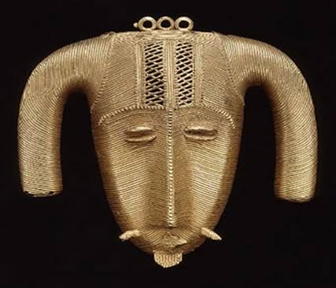
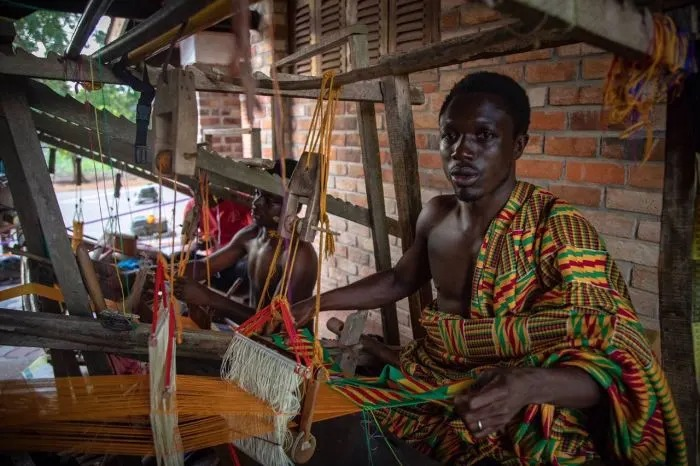

A África é um continente vasto e diversificado, repleto de uma rica variedade de culturas, tradições e etnias. Muitas vezes, as pessoas tendem a ter uma visão estereotipada e limitada sobre a diversidade africana, reduzindo-a a poucos grupos étnicos conhecidos. No entanto, a realidade é que a diversidade africana é muito maior do que se pode imaginar.
Gana, um país localizado na região oeste de África, é lar de diversas etnias com uma rica diversidade cultural. Entre esses grupos étnicos, os Ashanti ocupam um lugar de destaque, sendo reconhecidos por sua história fascinante, tradições únicas e contribuições significativas para a cultura ganense. Por outro lado, temos os Oromo, que se destacam como a maior etnia da Etiópia.Localizados no chifre de África e que abriga uma riqueza de grupos étnicos com suas próprias tradições e culturas distintas. Neste artigo, exploraremos a história e a cultura do povo Ashanti e dos Oromo, mergulhando em sua organização social, arte, religião e tradições.
Os Ashanti, também conhecidos como Axante, são um povo de língua Akan que habita a região central do Gana. Acredita-se que eles se estabeleceram na área no século XVII, originários de um grupo étnico anterior conhecido como Akans. No entanto, foi apenas no século XVIII que o reino Ashanti foi formado e se tornou um dos estados mais poderosos e influentes da África Ocidental.
O Reino Ashanti foi fundado por Osei Tutu, um líder visionário que unificou os diversos clãs Akan em um estado centralizado. A capital do reino, Kumasi, tornou-se um importante centro político, econômico e cultural. Os Ashanti estabeleceram uma estrutura de governo altamente organizada, com um rei supremo, conhecido como Asantehene, que governava com a ajuda de conselheiros e chefes locais.
A cultura Ashanti é ricamente expressa através de sua arte e artesanato. Os Ashanti são famosos por sua habilidade em trabalhar com ouro, e a região é conhecida por suas minas de ouro. Os ourives Ashanti criam belas jóias, como pulseiras, colares e anéis, que são apreciadas por sua elegância e complexidade. Além disso, a tecelagem e a cerâmica também desempenham um papel importante na expressão artística do povo Ashanti.
 A religião desempenha um papel significativo na vida cotidiana dos Ashanti. Eles acreditam em um Deus supremo, chamado Nyame, e em uma série de deuses menores que governam diferentes aspectos da vida. Os Ashanti também têm uma forte crença na vida após a morte e na veneração dos ancestrais. Os rituais e festivais religiosos são realizados regularmente para honrar os deuses e pedir bênçãos para a comunidade.

Os Ashanti são conhecidos por seus festivais coloridos e animados, que são realizados ao longo do ano. Um dos mais famosos é o Festival Odwira, que celebra a renovação espiritual e o novo ano de Ashanti. Durante o festival, os Ashanti se vestem com trajes tradicionais, dançam ao som de tambores e realizam cerimônias rituais. É um momento de reunião da comunidade, onde os laços familiares e a identidade cultural são reforçados.
O povo Ashanti deixou um legado duradouro na história de Gana. Sua resistência contra o domínio colonial britânico, conhecida como a Guerra Ashanti-Britânica, é um exemplo de sua determinação em preservar sua cultura e independência. Apesar dos desafios enfrentados ao longo dos anos, os Ashanti continuam a manter e transmitir suas tradições culturais de geração em geração, enriquecendo o tecido social de Gana.
Os Ashanti são um povo notável com uma rica herança cultural. Sua história, organização social, arte, religião e tradições refletem a identidade vibrante e diversa de Gana. À medida que Gana avança rumo ao futuro, é importante valorizar e preservar o legado dos Ashanti, reconhecendo sua contribuição significativa para a cultura ganense e para a história da África Ocidental como um todo.